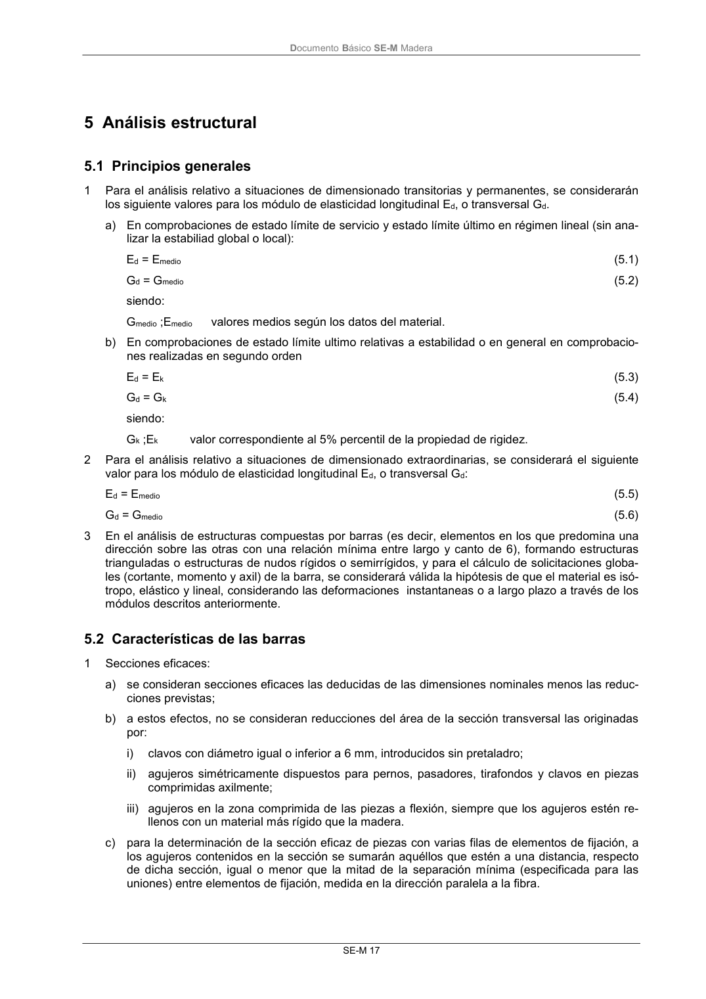

DB-SE-M Madera · edición 2019-12-20 · capa oficial
Documento DB-SE-M-oficial · SHA-256 del PDF 26b5819839ebfda78b0b119c5e76a0a37773b0d763c05688541870075df93718
Copia fiel del PDF fuente · Fuente oficial
Ficha de la disposición en la fuente oficial
Formatos: JSON del segmento · Markdown
4.6.2 Elementos mecánicos de fijación 1 Los elementos mecánicos de fijación contemplados en este DB para la realización de las uniones son: DocumentoBásico SE-M Madera SE-M 15 a) de tipo clavija: clavos de fuste liso o con resaltos, grapas, tirafondos (tornillos rosca madera), pernos o pasadores. b) conectores: de anillo, de placa o dentados. 2 En el proyecto se especificará, para su utilización en estructuras de madera, y para cada tipo de elemento mecánico de fijación de tipo clavija: a) resistencia característica a tracción del acero fu,k; b) información geométrica que permita la correcta ejecución de los detalles; DocumentoBásico SE-M Madera SE-M 17
